The word sakeidian is a combination of the Yanu words for six ("sak") and finger ("eid"), literally meaning six-fingered one, or hexadactyl. Not much else is known about their appearance, other than the fact that they have relatively tall ears and are bipedal. On the right is a series of drawings found in several caves across western Timia assumed to be drawn by early sakeidians soon after their arrival.